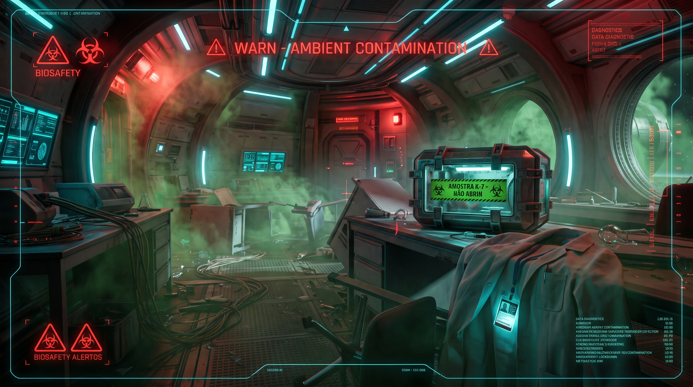

Quarentena Total Ativada

Ao destravar o contêiner da Amostra K-7, um gás verde denso toma o laboratório instantaneamente. Os sensores de biossegurança disparam e as comportas da estação se fecham automaticamente, selando o setor e interrompendo qualquer chance de resgate.